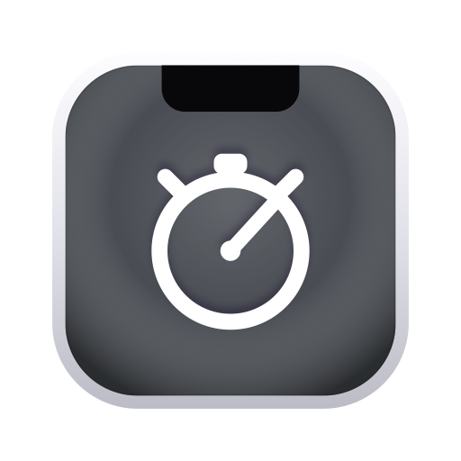

Notch Pomodoro
A focus timer that lives in your MacBook's notch.
100% offline · nothing leaves your MacHow do I start a session?
Click the pill at the top of your screen to expand the panel, pick focus or a break, and press start. When time is up you get a chime, a notification, and the pill pulses until you act.
Can I change the interval lengths, colors, and sound?
Yes. Open Settings from the menu-bar item to set the duration and color for each interval and choose your completion sound. Changes apply to your next session.
Where are my daily summaries saved?
Wherever you choose. On first run you pick a folder, and Notch Pomodoro writes a daily Markdown file there. It is perfect for Obsidian or any notes app.
Does it work on a Mac without a notch?
Yes. On Macs without a notch, and on external displays, it draws a tidy simulated notch so it looks right everywhere and follows your active display.
Is my data private?
Completely. The app is fully offline with no account and no network. Your sessions stay on your Mac. The only thing that ever leaves is a summary you export yourself.
Contact support
Questions, bug reports, or feature ideas.